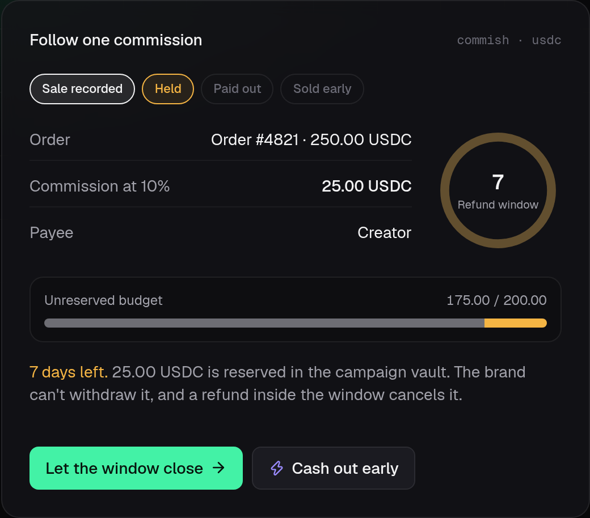

commish
Affiliate commissions that pay themselves, settled in USDC on Solana.
Bryan Kwandou, founder · Colosseum Crypto World's Fair
Problem
Amazon pays its affiliates about 60 days after the month closes.
Source: Amazon Associates Central, payment help page [S1]
Why brands wait
Brands hold commissions because one in five online orders comes back.
19.3%
of US online sales were expected to be returned in 2025
Source: National Retail Federation, 2025 returns report [S2]
Product
Each sale reserves the creator's cut where the brand can't spend it.

The commission card on getcommish.vercel.app, held inside the refund window
In use
Record the sale, hold it through the window, then release.
RecordThe brand's server signs it. The program sets the cut from the campaign rate.
→
HoldA refund inside the window cancels it.
→
ReleaseAnyone can trigger it. USDC goes only to the payee.
Early payout
A creator who can't wait sells the commission for cash today.
Creator, paid today
24.25 USDC
Buyer, paid at release
25.00 USDC
Example: a 25.00 USDC commission sold at a 3% discount. Illustration, not outside data.
How it works
One 9,296-byte program enforces the rules, and 26 tests attack them.
| Rule | On-chain check |
|---|
| Owed money stays locked | Withdrawals stop at the reserved amount |
| One order, one commission | Address derived from the order hash |
| Payouts can't be redirected | Destination must belong to the payee |
Source: program/ in github.com/bryankwandou/commish; base fee [S6]
Who else
At least eight Solana affiliate projects entered Colosseum before us. None placed.
| Project | What it offered |
|---|
| SuperLink | Revenue share via Blinks |
| Earnify | Web3 affiliate dashboard |
| Sendit | Marketplace with affiliates |
| Redio | Instant affiliate payouts |
| Coinfiliate | USDC rewards to shoppers |
| Three more | Blinks Deals, Traxeo, Reflink |
Source: Colosseum Copilot API and Arena, 2026-09-27 [S7]
Market
US brands will spend $13.81 billion on affiliate marketing in 2026.
$13.81B
Our plan is a 1% fee on each payout. If 1% of that spend settled here, that is $1.38M a year.
Source: eMarketer forecast via Post Affiliate Pro [S3]. Fee and share are team plan, not outside data.
Team
One founder built the program, app and tests in five days.
- Bryan Kwandou wrote the Pinocchio program and the four-language app
- Publishes open-source tools for builders: Plinth, Lugas, Splicecraft
- Every commit is public at github.com/bryankwandou/commish
Next
Next: ten Solana brands run their creator payouts through Commish.
Sep 2026Program and app built, 26 tests pass
Oct 2026Mainnet deploy and the first live campaign
Q4 2026Ten pilots with Solana apps that already pay creators
2027Audit, then a Shopify integration through order webhooks
Source: team plan, not outside data